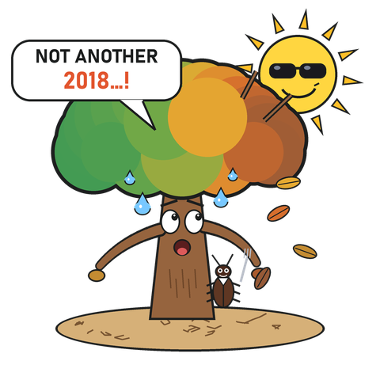

Keep your tree alive through the real droughts of 2015, 2018–2020 and 2022, and the hotter years that follow. How long can you hold out?
From the poster Unravelling the death spiral · G. Marano & H. Bugmann · WSL & ETH Zurich · 48th New Phytologist Symposium, Leysin · ginamarano.com
Created with the help of Claude Code Pro
That is Manion’s decline spiral: predisposing dry years, an inciting drought, contributing pests. ForClim uses the same three steps to reproduce the 2018–2020 die‑offs in Swiss and German forests, without calibration.
Show this screen at the poster. The longest‑lived tree of the day wins.
Read the science: Ecosphere 2026 · GMD 2026 · More apps at ginamarano.com